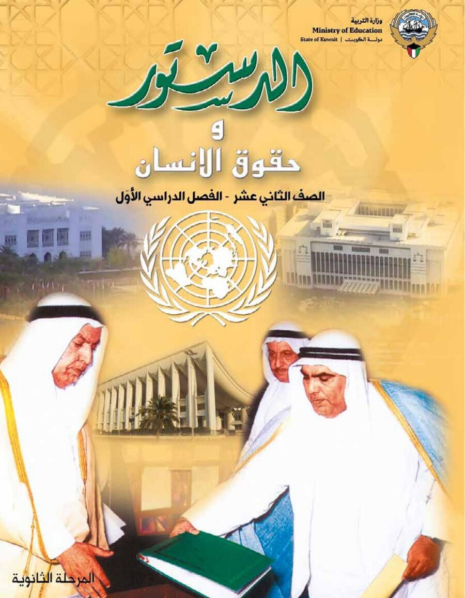
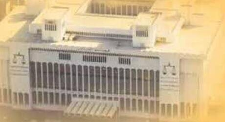
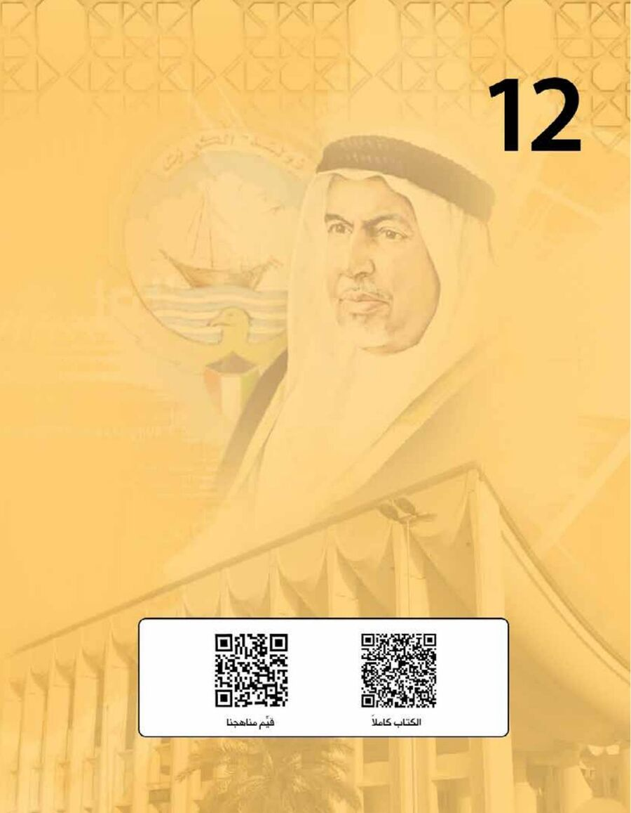

اضغط على أي موضوع لتنتقل إليه، أو قلّب الصفحات بالأزرار أو بالسحب.
شاهد الفيديو، ثم أجب في ذهنك:
لأن الدولة تطورت وزاد عدد سكانها وكثرت مسؤولياتها، فلم تعد قدرات الأفراد كافية لرعاية مصالح المجتمع وحاجاته.
اضغط على لون لتعرف معناه
في عهده نالت الكويت استقلالها، وصدر الدستور الكويتي الذي أنشأ السلطات العامة الثلاث، لذلك يُلقَّب بـ«أبو الدستور».
تنقّل بين محطات الخط الزمني
لم يكن النظام الدستوري في الكويت نتاج عصره الحاضر فقط؛ فقد كان الحاكم يتشاور ويستمع لأفراد المجتمع. ومع تطور الدولة أنشأ الدستور ثلاث سلطات عامة وحدد وظائفها وعلاقة كلٍّ منها بالأخرى.
اقلب كل بطاقة لتعرف وظيفتها

اضغط «التالي» لكشف الأعمال واحداً تلو الآخر
تتكون من جهازين: الأمير رئيس الدولة ورئيس السلطة التنفيذية، والوزارة (الحكومة) وتتكون من رئيس الوزراء والوزراء ومجلس الوزراء.
اضغط على أي عنصر في الشجرة
يخلو منصب الأمير بالوفاة، أو التنحية لعدم القدرة الصحية، أو الاستقالة الاختيارية.
صمّم المبنى المعماري الدنماركي يورن أوتزون، وتشبه مظلته الكبيرة الخيمة العربية. وفيه يجلس الوزراء أعضاءً في مجلس الأمة.
المقصود بالوزارة المعنى الواسع الذي يشمل رئيس الوزراء والوزراء ومجلس الوزراء. ويرأس رئيس الوزراء الجهاز التنفيذي بعد الأمير.
يختاره الأمير منفرداً بعد المشاورات التقليدية مع: رئيس مجلس الأمة، ورؤساء الجماعات السياسية، ورؤساء الوزارة السابقين. ونتائجها غير ملزمة للأمير.
الوزراء هم العنصر الثاني من عناصر السلطة التنفيذية، ويترأسون وزارات الدولة ويصدرون القرارات اللازمة لتنظيم العمل بها، وهم مسؤولون أمام الأمير ومجلس الأمة.
اسحب الحلقة لتدويرها واستكشف الوزارات
ويوجد أيضاً وزراء دولة بلا وزارة، مثل وزير الدولة لشؤون مجلس الوزراء ووزير الدولة لشؤون مجلس الأمة، ولهم ما لبقية الوزراء من حقوق وواجبات.
لا يجوز الجمع بين المنصب الوزاري وأي وظيفة حكومية أخرى أو عضوية مجالس الشركات أو ممارسة عمل حر كالتجارة والطب والمحاماة، ولا يبرم الوزير عقداً مع الجهات الحكومية. ويؤدي الوزراء القسم مرتين: أمام الأمير، ثم أمام مجلس الأمة.
هو اجتماع رئيس مجلس الوزراء والوزراء جميعاً، ويرأس رئيس الوزراء اجتماعاته، ويمكن للأمير أن يترأسها متى ظهرت الحاجة.
اضغط على المقاعد لتحدد من حضر، ثم اطرح القرار للتصويت
أي حين تسير الأمور بوجود مجلس الأمة ولا توجد ظروف تمنع عمل السلطة التنفيذية. لعبة التصنيف: اختر بطاقة ثم اضغط على الصندوق المناسب.
تُسمى القرارات الإدارية اللوائح، ويجب ألا تخالف القوانين والدستور، وإلا ألغاها القضاء.
